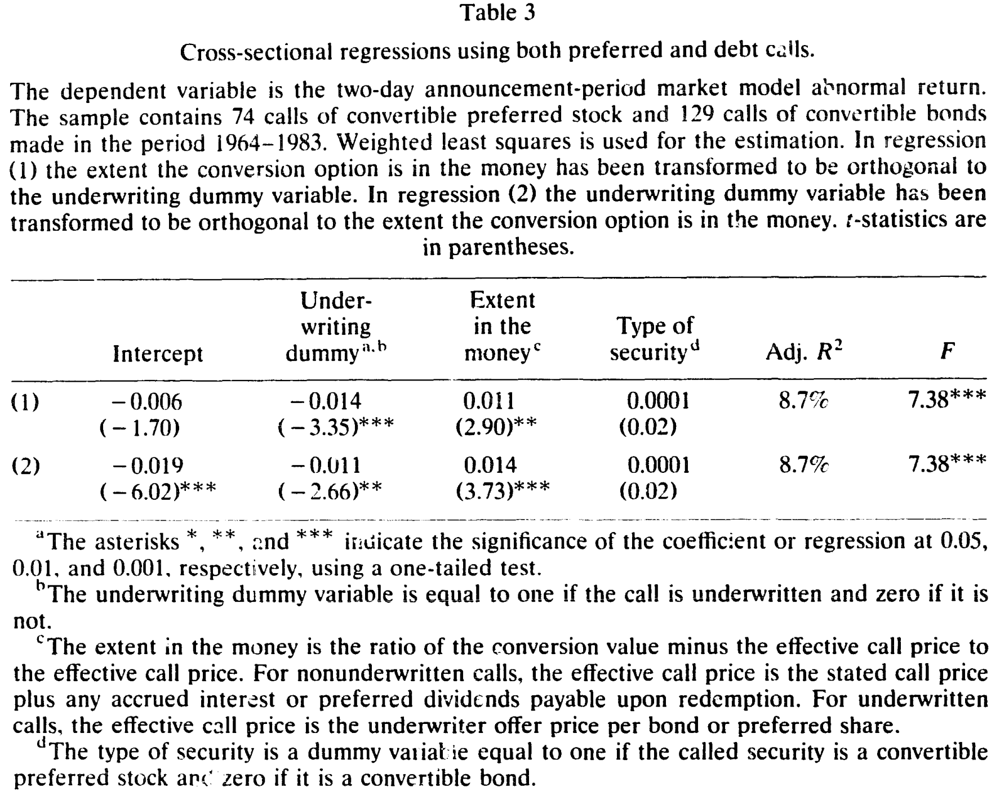
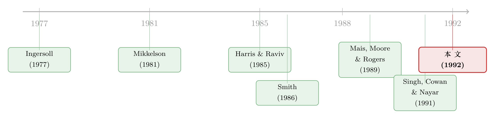

同一个赎回，两种跌法——可它跟「是股是债」没关系
本文读的是 Cowan, Nayar & Singh (1992, JFE) 的一篇 note：上市公司强制赎回可转换证券时，股价的负反应只出现在「请了承销商」的那一类赎回里；一旦控制了是否承销、以及期权价内有多深，转换可转债与转换可转优先股引发的股价反应没有任何差别。换句话说，市场盯的不是「你赎回的是股还是债」，而是「你为什么要花钱请人替你兜底」。
1 一个搁了十年的小谜题
先讲一个看上去无关紧要、却让一代公司金融研究者隐隐不安的事实。
公司发了可转换证券——可转债 (convertible debt) 也好、可转优先股 (convertible preferred stock) 也好——总有一天会想把它「逼」成普通股。办法叫强制转换式赎回 (conversion-forcing call)：公司宣布按赎回价 (call price) 赎回这批证券，而此时转换价值远高于赎回价，持有人为了不亏只能乖乖转股。于是债（或优先股）凭空消失，普通股凭空增加。
Mikkelson (1981) 当年做了一件很朴素的事：把这两类赎回的股价反应放在一起比。结果发现，可转优先股的赎回，引发的股价下跌，比可转债的赎回要小。
这就尴尬了。因为按照教科书的直觉，这恰恰是「该有差别」的地方。可转债转股，是把债换成股，杠杆下降、税盾消失，是一次实打实的资本结构变动；可转优先股本就介于股债之间，转成普通股的「资本结构含义」要弱得多。于是一个顺理成章的解释呼之欲出：两类证券引发的反应不同，是因为它们对资本结构的影响不同——这是一个典型的「最优资本结构 (optimal capital structure)」故事。
这篇 note 想说的是：这个故事，错了。
2 真正的分水岭，不在「股 vs 债」，而在「有没有请承销商」
接着，一个自然的问题是：如果不是证券类型，那是什么在驱动这个差别？
作者把目光投向了一个被前人当作「技术细节」忽略掉的东西——承销 (underwriting)。
一家公司发起强制赎回时，它面临一个真实的风险：从宣布赎回到转换权到期，中间通常隔着大约三十天的赎回通知期 (call notice period)。万一这段时间股价大跌，转换价值跌破赎回价，持有人就会理性地选择「拿钱走人」而非转股——公司不但没逼成转换，还得真金白银地掏出现金去赎回。为了消除这个风险，公司可以付一笔费用请承销商，由后者承诺包销、确保转换完成 [Ingersoll (1977) 早就点出过这个安排]。
于是真正关键的一步出现了。作者此前的姊妹篇 Singh, Cowan & Nayar (1991) 已经发现：可转债赎回那个「统计上显著为负」的平均股价反应，几乎全部集中在被承销的赎回里。本文把同一把刀架到了可转优先股头上，问：优先股是不是也这样？
答案是：一模一样。
这里的经济学直觉值得反复咂摸。承销商替你「兜底」，本质上是替你写了一份看跌期权——它承担了通知期内股价跌破赎回价的风险（关于承销商在发行中扮演「卖出期权」的角色，可参见《承销商替你做了一道「卖出期权」的算术》与《新股「打折」不是吃亏，是投行替你卖了一份看跌期权》）。那么，什么样的经理才愿意去买这份保险？ 正是那些心里认定股价很可能在通知期内下滑、转换岌岌可危的经理。
把这个逻辑链条接起来，就是本文的核心信息故事，它直接承袭自 Harris & Raviv (1985) 与 Smith (1986)：
- 经理在收到坏消息（认为公司价值要下行）时，才会发起赎回；
- 当消息特别坏、连通知期内能否顺利转换都没把握时，经理才会去请承销商；
- 理性的投资者看穿了这层动机——「你请了承销商」本身就是一个信号——于是承销赎回的股价跌得比非承销赎回更狠。
注意这个故事的精妙之处：它完全不依赖「赎回的是股还是债」。信息是同一种信息，传递信息的动作是同一个动作，那么不管被赎回的证券叫什么名字，市场的反应都该一样。Smith (1986) 的洞见正在于此——决定股价反应的，是不同交易所揭示的信息，而非交易的资本结构外壳。
3 识别策略与数据
要把「是证券类型，还是承销与价内程度」这件事干净地分开，作者的做法是把两类证券合并进同一个横截面回归，再让一个「证券类型虚拟变量」去跟「承销虚拟变量」「价内程度」同台竞争，看谁还站得住。
样本。 可转债样本直接取自 Singh, Cowan & Nayar (1991)，含 64 例非承销赎回与 65 例承销赎回。可转优先股样本是新搜集的：作者从 Moody's Dividend Record 逐年翻出 1964–1983 年被赎回的优先股，仿照 Mikkelson (1981) 剔除非强制性赎回（判据是赎回公告日及前一交易日该优先股都必须在价内），再剔除三天内有其他新闻污染的样本，并要求普通股在 CRSP 纽交所／美交所日收益文件中有数据。是否承销，则从 Investment Dealer's Digest 的 Corporate Financing Directory、《华尔街日报》以及与公司的直接通信中确认。最终得到 24 例承销、59 例非承销的可转优先股赎回（去掉同时赎回两期证券的重复事件后，为 23 例承销、51 例非承销）。
事件研究。 用标准的事件研究 (event study) 法度量股价反应：市场模型用 CRSP 等权指数；参数估计期取转换权到期后第 5 天起的 252 个交易日——之所以用「赎回之后」的估计窗口，是为了避开样本选择偏误 [Mikkelson (1981)、Cowan, Nayar & Singh (1990) 都强调过这一点]。由于公司可能在 -1 日收盘前后发布消息，作者把 -1 与 0 两日合成一个两日公告窗口，度量累计平均异常收益 (cumulative average abnormal return, CAR)。
先看单变量。 在只算可转优先股的样本里，承销赎回的两日 CAR 在 0.01 水平上显著为负；而非承销赎回的 CAR 只有 -0.07%，统计上不显著。这已经把 Singh, Cowan & Nayar (1991) 在可转债上的发现，原样复制到了优先股上。
更要紧的是承销组与非承销组在「基本面」上的差异。承销赎回的优先股：
- 价内更浅。用「转换价值超出有效赎回价的百分比」衡量，非承销组均值 69.1%、承销组只有 42.2%，差异在 0.05 水平显著——价内越浅，意味着持有人越可能因一则坏消息就放弃转换，于是越需要承销商兜底，也越暗示经理握着更负面的私人信息。
- 通知期更短。非承销赎回平均 45.0 天，承销赎回只有 29.5 天，差异在 0.01 水平显著。更短的通知期压缩了投行的风险敞口，可以看作对承销商的一种隐性补偿。
- 预期股利削减更大、赎回规模更大。但市值、管理层持股比例两组并无显著差异——也就是说，两组公司在「体量」和「内部人利益」上是可比的。
这些横截面差异，恰恰是「信息解释」要求看到的图景。
4 主要结果：把证券类型拖出来对质
然后，到了全文的高潮——合并回归。作者用加权最小二乘 (weighted least squares, WLS)（权重取公告期异常收益方差的倒数）估计如下设定：
这里有一个细节值得点明：承销虚拟变量、价内程度、通知期三者高度相关，硬塞进同一个回归会让系数互相「打架」。作者的处理是做正交化 (orthogonalize)——在回归 (1) 里把价内程度对承销虚拟变量回归、取残差代入；在回归 (2) 里反过来把承销虚拟变量对价内程度正交化。这样无论先剥离谁的影响，都能看清剩下那个变量的净效应。
合并了 74 例可转优先股赎回与 129 例可转债赎回，结果如表 3 所示。

Table 3
读数是干净利落的：
- 承销虚拟变量显著为负：回归 (1) 系数
-0.014（t =-3.35，1‰ 水平）；回归 (2) 系数-0.011（t =-2.66，1% 水平）。请承销商，平均把股价砸下约 1.1%–1.4%。 - 价内程度显著为正：回归 (1)
0.011（t =2.90）；回归 (2)0.014（t =3.73）。价内越深，反应越没那么负——因为深度价内时转换更可能是持有人自愿完成的，与经理的坏消息无关。 - 而那个被审判的证券类型虚拟变量——系数
0.0001，t =0.02。
0.02 的 t 值。这几乎是一个人能写出的「最不显著」的数字。整个回归的 Adj. R² = 8.7%、F = 7.38（1‰ 显著），解释力全部来自承销与价内程度，证券是股是债，对股价反应没有任何独立的解释力。
于是反转完成：Mikkelson (1981) 当年看到的「优先股跌得少」，根本不是因为优先股和债券是两种东西，而是因为优先股样本里恰好混入了更多「价内更深、更少被承销」的赎回。一旦把承销与价内程度控制住，谜题自动消失。作者还顺手补了一刀：Mais, Moore & Rogers (1989) 曾指认的「股利削减差额 (payout differential)」这个决定因素，在控制了承销与价内程度之后，也丧失了解释力。
这就把天平彻底从「资本结构解释」拨向了「信息解释」：可转换证券的赎回、以及「用不用承销商」这个决定，传递的是经理对公司价值的私人信息；投资者读懂了动机，股价随之下跌——这套逻辑与证券类型无关。
5 文献脉络
把这条线索捋一遍，会发现它是一个很漂亮的「层层逼近」的过程。
最早是 Ingersoll (1977) 系统研究了可转换证券的最优赎回政策，并第一次把「付费请承销商确保转换」这个制度安排摆上桌面。接着 Mikkelson (1981) 用事件研究记录下了那个让人不安的经验事实——可转优先股与可转债的赎回反应不一样，但他没能说清为什么。

理论的弹药来自两个方向。Harris & Raviv (1985) 提出可转债赎回政策的序贯信号模型：经理在收到关于未来现金流的负面私人信息时才赎回，投资者看穿动机、股价下跌。Smith (1986) 则在更一般的层面上主张——决定各类证券交易公告反应的，是交易所揭示的信息，而非交易的资本结构属性；只要信息相似，反应就不该因证券类型而异。这正是本文赖以立论的「上位法」。
与此同时，实证这边在不断逼近真相。Mais, Moore & Rogers (1989) 重新审视可转优先股赎回的股东财富效应，提出股利削减差额是一个决定因素；Cowan, Nayar & Singh (1990) 研究可转债赎回前后的股票收益，确立了用「赎回后估计窗口」避开样本选择偏误的做法。真正的临门一脚是 Singh, Cowan & Nayar (1991)：他们发现可转债赎回的负反应集中在承销赎回，第一次把「承销」从技术细节提升为核心变量。
本文 (1992) 所处的位置，就是把这一发现推广到可转优先股，并在合并样本里证明它压根与证券类型无关——从而把 Mikkelson (1981) 的老谜题，归并进 Smith (1986) 的信息框架。它是一篇 note，体量很小，却像最后一块拼图，让整幅图景严丝合缝。
这条脉络也和「可转债到底是什么」的更大讨论相通。可转债常被视作一种「不好意思直接增发」的后门股权融资（参见《走后门的股票》）；而赎回的「可信承诺」与稀释含义，又延伸出另一支文献（参见《威胁要「全赎回」，债主该不该信？》）。本文则把焦点钉在了「赎回时刻的信息释放」这一面。
评论与延伸（Q&A + 研究方向）
(a) 几个可能的疑问
Q：承销赎回跌得多，会不会只是因为这些公司本来就更差，而非「请承销商」本身在传递信息？
这正是作者用横截面回归要回应的内生性担忧。承销组确实在「价内更浅、规模更大、股利削减更大」上系统性地不同，但市值与内部人持股两组无显著差异，可比性尚可；更关键的是，回归里在控制了价内程度之后，承销虚拟变量仍独立显著为负（t 在 -2.66 到 -3.35 之间）。当然，「请承销商」终究是公司的内生选择，严格意义上这不是外生冲击，只能说证据与信息解释一致，而非铁证。
Q：把「价内程度」正交化来正交化去，是不是在数据上做手脚？
不是。承销、价内、通知期三者天然高度相关，若不处理，多重共线性会让每个系数都不显著、却无法判断谁真正重要。正交化只是「先剥离 A 对 B 的影响、再看 B 的净效应」，回归 (1) 与 (2) 互换了剥离顺序，两种做法下承销与价内程度的符号和显著性都稳健，证券类型则始终是 t≈0.02。这恰恰说明结论不是某一种正交化方式「凑」出来的。
Q：证券类型虚拟变量不显著，会不会只是样本太小、检验功效不够？
有这个隐忧——
74+129例、note 体量的样本，确实谈不上功效充裕。但要注意：不显著的不是一个「接近临界值」的系数，而是0.0001、t =0.02——点估计本身就贴着零。同时承销与价内程度在同一回归里都拿到了 2%–1‰ 的显著性，说明样本并非「什么都测不出」。功效不足通常表现为「系数有量级但 t 值不够」，这里是「连量级都没有」，两者性质不同。
Q：这和「最优资本结构解释」到底差在哪？为什么本文能否定它？
资本结构解释预测：可转债转股（债→股，杠杆与税盾变动大）应比可转优先股转股引发更大的反应，即证券类型本身应当显著。本文发现证券类型系数为零、而承销与信息变量显著，等于说「反应的来源是信息释放，不是资本结构改变」。这是一个干净的可证伪对立假设之争，数据选择了信息解释。
Q：通知期更短，到底是承销的「因」还是「果」？
作者把它解读为对承销商的隐性补偿——更短的通知期压缩了投行承担股价下行风险的时间窗。但它也可能是同一个底层变量（价内程度、合同条款）的共同结果。文中正因如此，在主回归里用通知期与价内程度、承销变量做了正交化处理，避免把这层纠缠当成独立效应来解读。
Q：这套逻辑能不能推广到今天的「死亡螺旋可转债」之类结构？
机制上有相通之处：核心都是「赎回／转换时刻，谁承担了价格下行风险、又因此泄露了什么信息」。但现代结构（如浮动转换价的可转债）把下行风险的分担写进了条款本身，信号含义与 1992 年的「请不请承销商」已大不相同（参见《死亡螺旋可转债的两副面孔》）。直接外推要小心。
(b) 几个可能的研究问题与提案
1. 把「承销=坏消息」的信号检验搬到公司债的赎回／回售市场。
- 【经济故事】本文的核心是「经理用一个看似中性的制度选择（请承销商）泄露了私人信息」。在公司债市场，类似的「中性动作」比比皆是：是否聘请财务顾问、是否做承诺式包销、是否同步安排再融资。这些动作本身可能就是信息信号。
- 【可行性】中。需要把债券赎回／要约事件与是否有承销／顾问介入对齐（可从 Mergent FISD、DealScan 与公告文本中提取），用债券二级市场价差或同发行人股票反应度量信息含量。难点在事件清洗与「承销选择」的内生性，识别上偏弱，但描述性证据 doable。
2. 外资持有人结构会不会改变「赎回信号」的市场解读？ - 【经济故事】信号能否被定价，取决于谁在场、谁在读。如果一只可转债／可转优先股的边际持有人以外资机构为主，他们对「请承销商」这类本地制度细节的解读速度与深度可能不同，进而影响公告反应的强度与时滞。 - 【可行性】中偏低。需要事件级的持有人结构数据（如 13F、各国托管数据）与可转换证券赎回事件交叉，样本会很稀薄；识别上可借「可投资度」或指数纳入带来的外资份额外生变动。诚实地说，干净样本难凑，更适合做成描述性 + 截面相关的探索。
3. 用通知期长度作为「承销商风险敞口」的连续度量，重估信息含量。 - 【经济故事】本文把通知期当作离散的「隐性补偿」线索。但通知期是连续变量，且在合同允许的上下限内由经理在赎回时点选择——它本身可能是经理信心的连续信号：越短，越暗示经理担心股价撑不住。 - 【可行性】高。数据就在赎回公告与发行契约里，可直接构造「实际通知期 / 合同允许区间」这一标准化变量，纳入横截面回归检验其对 CAR 的边际解释力。识别仍是相关性层面，但变量构造干净、可立即上手。
4. 把「信息解释 vs 资本结构解释」之争，用更现代的高频与债券微观结构数据重做一遍。
- 【经济故事】1992 年只能看两日股票 CAR。今天可以看赎回公告后分钟级的股票与债券价格、期权隐含波动率的同步反应——如果是纯信息释放，股、债、期权应当同向、同时调整；如果掺杂资本结构效应，三者的相对幅度会出现可识别的差异。
- 【可行性】中。需要 TRACE 债券成交、期权数据与赎回事件对齐，事件数在现代样本中仍偏少（强制赎回不算高频事件），但方法成熟、识别逻辑清晰，是一个值得做的「老问题、新数据」选题。
参考文献
- Cowan, A. R., Nayar, N., & Singh, A. K. (1990). Stock returns before and after calls of convertible bonds. Journal of Financial and Quantitative Analysis 25(4), 549–554.
- Cowan, A. R., Nayar, N., & Singh, A. K. (1992). Underwriting calls of convertible securities: A note. Journal of Financial Economics 31(2), 269–278.
- Harris, M., & Raviv, A. (1985). A sequential signalling model of convertible debt call policy. Journal of Finance 40(5), 1263–1281.
- Ingersoll, J. E. (1977). An examination of corporate call policies on convertible securities. Journal of Finance 32(2), 463–478.
- Mais, E. L., Moore, W. T., & Rogers, R. C. (1989). A re-examination of shareholder wealth effects of calls of convertible preferred stock. Journal of Finance 44(5), 1401–1410.
- Mikkelson, W. H. (1981). Convertible calls and security returns. Journal of Financial Economics 9(3), 237–264.
- Pinegar, J. M., & Lease, R. C. (1986). The impact of preferred-for-common exchange offers on firm value. Journal of Finance 41(4), 795–814.
- Singh, A. K., Cowan, A. R., & Nayar, N. (1991). Underwritten calls of convertible bonds. Journal of Financial Economics 29(1), 173–196.
- Smith, C. W., Jr. (1986). Investment banking and the capital acquisition process. Journal of Financial Economics 15(1–2), 3–29.